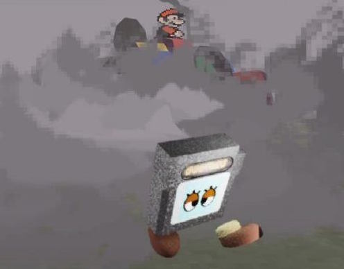

3/29/2023
Hi everyone - I hope this message finds you well.
It’s been a minute (two minutes?) since I last sent out a swampbabes newsletter, but here we are. Time has been especially weird the past year, every event seems both near and distant. It took me like two months to play 13 hours of King’s Field IV, but I just finished it and it was incredible, lol. I keep going to the store and forgetting to buy almond milk (since typing this draft, my fridge has become full of just cartons of almond milk). I feel slightly more awake on days when it’s above freezing, but it makes me worried for the future of this planet and the life that thrives around it.
A couple things:
The queer games bundle is currently open for entries - if you aren’t familiar with it, this is an annual large-scale mutual fund project where queer games and games adjacent makers collectively sell their projects during the month of June (Pride Month) - everyone who enters gets to participate, you just need an itch.io account with your game or other type of project uploaded.
swampbabes is also currently seeking projects for a the wrong pavilion - the deadline for applications will be June 1, 2023, and can be sent to this email. These applications can be informal. We’re hoping to set up a few pages on our site dedicated to the pavilion, an online exhibition space. I’m actually hoping to revamp the entire site soon…
Also, the arts organization I work for, Visual Studies Workshop, currently has an open call for its artist residency. The call is free to apply to and is open until April 2. The residency supports artists working in artist books, film/video, new media, and photography. I highly recommend you apply, it’s a really great program!
What I’m Playing: Fire Emblem Thracia 776
What I’m Reading: Illness as Metaphor
What I’m Listening to: Parannoul
nilson
< 3
SCREEN\DOOR
visual studies workshop
December 9, 2021
SCREEN/DOOR featured several members and friends of the swampbabes community across the earth working in various genres and mediums, with a common interest in radical (video) game making, playing, and exhibiting. These works deal with the video screen as door, wall, and window, many with a conflicted sense of dread or longing. Includes games, video, and performance from Cody Filardi, gg noni, Mariken and fotocopiadora, Evan Bobrow, Peter Basma-Lord, nilson carroll, Taehee Whang, and others. SCREEN\DOOR was an in-person screening in the VSW Microcinema as well as VSW's first live-streamed screening event via Twitch. Download the program here.
Queer Games Bundle 2021
itch.io
June 2021
 The Queer Games Bundle is an initiative to collaboratively support as many queer micro/art game devs and makers as possible. The 2021 bundle included over 230 games made by almost 200 artists and allowed them to sell their games collectively and without competition during June, Pride Month. The lofty goal was to raise $5.8 million dollars, one-third of the cost to make a AAA video game, to give all artists involved a livable wage for a year. The 2021 bundle raised over 120,000 USD, earning every queer artist over 700 USD. The Queer Games Bundle is a reaction to many things, labor in the time of the Covid-19 pandemic, the ultra competitive indie games community, and the increasing stranglehold of rainbow capitalism over queer identities. This project was led by Taylor McCue and nilson carroll and hosted on itch.io.
The Queer Games Bundle is an initiative to collaboratively support as many queer micro/art game devs and makers as possible. The 2021 bundle included over 230 games made by almost 200 artists and allowed them to sell their games collectively and without competition during June, Pride Month. The lofty goal was to raise $5.8 million dollars, one-third of the cost to make a AAA video game, to give all artists involved a livable wage for a year. The 2021 bundle raised over 120,000 USD, earning every queer artist over 700 USD. The Queer Games Bundle is a reaction to many things, labor in the time of the Covid-19 pandemic, the ultra competitive indie games community, and the increasing stranglehold of rainbow capitalism over queer identities. This project was led by Taylor McCue and nilson carroll and hosted on itch.io.
[Games For Windows]
rochester, ny
Fall 2019
 Games for Windows: Experiments with Game Footage was a store-front window exhibition at The Liquor Store in Rochester, NY. Expanding the tradition of cinema and games, each artist uses various gestures of play to create experimental video art from video game footage. These videos work through issues of sexism in popular culture, gun-related violence, modes of queering, mainstream ludic binaries, and intimacy in games by taking radical approaches to the formal qualities of video games. Relieved of their performative, neo-liberal gameplay hierarchies, the game footage and graphics in these videos are imbued with new meanings, difficult questions, and unfamiliar aesthetics. By presenting these works together in an ongoing public viewing space, images and actions familiar to game players constantly shift and create new dialogues between the monitors as well as between games culture, the art community, and the pedestrians of Rochester.
Games for Windows: Experiments with Game Footage was a store-front window exhibition at The Liquor Store in Rochester, NY. Expanding the tradition of cinema and games, each artist uses various gestures of play to create experimental video art from video game footage. These videos work through issues of sexism in popular culture, gun-related violence, modes of queering, mainstream ludic binaries, and intimacy in games by taking radical approaches to the formal qualities of video games. Relieved of their performative, neo-liberal gameplay hierarchies, the game footage and graphics in these videos are imbued with new meanings, difficult questions, and unfamiliar aesthetics. By presenting these works together in an ongoing public viewing space, images and actions familiar to game players constantly shift and create new dialogues between the monitors as well as between games culture, the art community, and the pedestrians of Rochester.